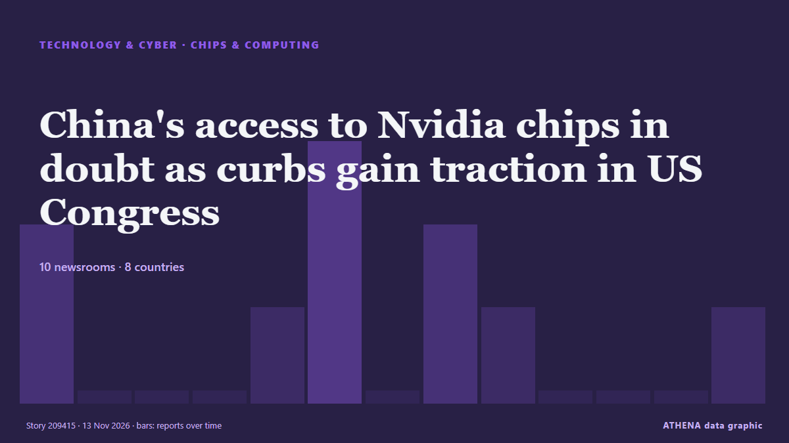

Technology, AI & Cybersecurity
SponsoredPresented by  Cybernetics and Artificial Intelligence Lab Welcome to the Cybernetics and Artificial Intelligence Laboratory, established at the Department of Business Administration of the National and Kapodistrian University of Athens. The lab is headed by Professor Dimitrios Thomakos. The lab aims to do research that can be published in top venues. Our research uses tools and methods of Artificial Intelligence, and lies in the following areas: - Forecasting - Decision making - Cyber security - Finance We are always looking forward to collaborating with exceptional students!
Cybernetics and Artificial Intelligence Lab Welcome to the Cybernetics and Artificial Intelligence Laboratory, established at the Department of Business Administration of the National and Kapodistrian University of Athens. The lab is headed by Professor Dimitrios Thomakos. The lab aims to do research that can be published in top venues. Our research uses tools and methods of Artificial Intelligence, and lies in the following areas: - Forecasting - Decision making - Cyber security - Finance We are always looking forward to collaborating with exceptional students!

Chips & computingChina's access to Nvidia chips in doubt as curbs gain traction in US Congress
US House Speaker Mike Johnson said on Thursday there was growing consensus in Congress on limiting chip exports to China after a spy scandal forced out Nvidia CEO Jensen Huang. from The Korea Times
| 31 Oct | 34 |
|---|---|
| 1 Nov | 48 |
| 2 Nov | 111 |
| 3 Nov | 102 |
| 4 Nov | 99 |
| 5 Nov | 112 |
| 6 Nov | 54 |
| 7 Nov | 37 |
| 8 Nov | 42 |
| 9 Nov | 102 |
| 10 Nov | 113 |
| 11 Nov | 77 |
| 12 Nov | 63 |
| 13 Nov | 19 |
Egyptian court postpones retrial of independent news site’s editor
CAIRO, Nov 11 - An Egyptian court on Wednesday postponed until November 18 a retrial of the editor-in-chief of Mada Masr, a prominent independent news site, on charges of publishing false news and… from The Straits Times
3 Indian-origin CEOs in race to replace Jensen Huang as Nvidia chief
An alleged affair between Nvidia CEO Jensen Huang and former Singapore-based Megaspeed executive Alice Huang has triggered a storm. from DigiTimes Asia
5 takeaways from Nvidia’s Jensen Huang scandal
Trump knew about Huang’s Chinese contact months before the public did, and Washington has no rulebook for cases like it. from Lowy Institute — The Interpreter
EU leaders to hold first ever talks on AI in Dublin
The EU seeks to strengthen its position in the global AI race while protecting people and businesses from the technology's potential dangers. from Free Malaysia Today
Trump team mulling Howard Lutnick’s future as commerce secretary after Nvidia scandal, report says
Criticism of Lutnick's actions predates Nvidia CEO Jensen Huang’s Thursday resignation. from The Independent
Nvidia board reportedly preparing to oust CEO Jensen Huang amid affair and spy claims
Computer chip giant Nvidia’s board is preparing to ouse CEO Jensen Huang after he had two extramarital affairs, including one with a suspected Chinese spy, reports say. from Stuff
Shaheen, Tillis demand probe into Ukraine Starshield restrictions
Outgoing bipartisan senators outraged over Ukrainian reports of interruptions to military-grade satellite access are calling for Congress to pursue accountability for the shutdown, focusing on Elon… from The Hill
What Huang's resignation means for chipmakers, AI and U.S. national security
Nvidia CEO Jensen Huang announced his resignation after it was reported that he had an affair with a businesswoman accused of being a Chinese spy and an extramarital relationship with an Nvidia… from PBS NewsHour
Australia's cybersecurity chief investigating Microsoft outage
Australians are reporting that their businesses, government agencies and other organisations have been brought to a standstill as they wait to regain access to their email and other online systems. from ABC News Australia
Through the Lens: China’s Singles Day shopping festival
AI chatbots can research products, make recommendations and complete purchases, while interim Singles’ Day figures show sales rose 2.4%. from Free Malaysia Today
SpaceX, Tesla merger talks progress
NEW YORK: SpaceX and Tesla are progressing in their merger negotiations, and a deal could be announced as early as December, Bloomberg News reported on Thursday, citing people familiar with the… from New Straits Times
Nvidia CEO Jensen Huang Resigns
Move follows company investigation into an affair with a Chinese woman alleged to be a spy. from to vima
Microsoft investigates reports of Outlook mailbox access problems
The outage is affecting Microsoft 365, including cloud-based services like Outlook and Cop. from BusinessDesk
Missing teen found alive after 6 days in the Australian woodlands
A 17-year-old boy with autism was found alive Thursday after six days lost in eastern Australian woodlands. from CBC News
Nvidia CEO Jensen Huang drops from world’s top 10 richest after chips sell-off
Nvidia CEO Jensen Huang warned that Europe risks falling further behind the US and China in artificial intelligence, despite its industrial base and technical talent. from DigiTimes Asia
Foxconn beats forecasts with Q3 profit jump
The Taiwanese tech giant has gone beyond making low-margin iPhones to producing AI servers for US tech titan Nvidia, as well as electric vehicles and robots. from Free Malaysia Today
Maersk Confirms Data Theft Amid $5 Million Extortion Attempt
The WhiteArmor ransomware group claims it stole 100GB of data from the shipping giant’s systems. from SecurityWeek
Chipmaker Patch Tuesday: Over 200 Vulnerabilities Addressed by Intel, AMD
Intel and AMD disclose more than 200 vulnerabilities, including critical flaws in Intel TDX software and numerous AMD graphics bugs. from SecurityWeek
Spain investigates alleged child sexual abuse material on TikTok
MADRID: Spanish prosecutors on Wednesday ordered an investigation into the alleged distribution of child sexual abuse material on TikTok, following a complaint filed by anti-disinformation group… from New Straits Times
Chinese university bought Nvidia H200 chips despite US blacklist
BEIJING: A Chinese university with deep ties to the People’s Liberation Army bought Nvidia’s powerful H200 AI chips last month despite being on a US export blacklist, procurement records show… from Business Recorder
Meta is losing its longtime head of infrastructure
Santosh Janardhan, who originally joined the company in 2009, will be stepping down from his role. from TechCrunch
Everything we got before Grand Theft Auto 6
It has been 13 years since Grand Theft Auto 5, and a lot has happened in the world. from Sydney Morning Herald
Alleged Chinese spy at center of Nvidia scandal remains mysterious
The background of an alleged Chinese spy at the center of a scandal engulfing U.S. chip giant Nvidia remains a mystery, with report. from Mainichi (English)
Commentary: FOMO on mega IPOs like Anthropic? Read the filing, not the hype
Anthropic’s upcoming IPO could fuel FOMO for many investors but excitement over a company’s prospects should not overshadow the fundamentals of investing, says Chez Anbu, head of wealth advisory at… from CNA (Channel NewsAsia)
After fridge hacks, home appliances could be next, warns EU cyber chief
Juhan Lepassaar urges Europe to invest more in countering growing cyber threats. from The Straits Times
Egyptian journalist's retrial adjourned as UN warns of 'assaults on press freedom'
Mada Masr editor-in-chief Lina Attalah is being tried on the charge of "publishing false news" and potentially faces imprisonment. from BBC News
Reddit Reviews uses AI to summarise what users say about 10,000 products
Reddit is turning what its users say about products into AI-made reviews. from The Next Web
France's cyberattack allegations against Iran should wake up Europe
A supermarket refrigerator might seem an unlikely instrument of geopolitical confrontation. from Iran International (English)
Helsing launches Clarity, a European rival to Palantir’s Maven
German defence company Helsing has launched Clarity, a direct challenge to Palantir. from The Next Web
Meta expands AI age checks worldwide on Instagram
New technology aims to identify underage users with adult birth dates and strengthen protections for teenagers across the platform. from News of Bahrain
Anthropic targets valuation of up to $1.4 trillion for blockbuster IPO
OPINION: New Zealand investors may be limited to specified wholesale categories. from New Zealand Herald
The final silencing of Novaya Gazeta, Russia's boldest independent newspaper
After 33 years of defying the Kremlin, Novaya Gazeta has closed. from Haaretz (English)